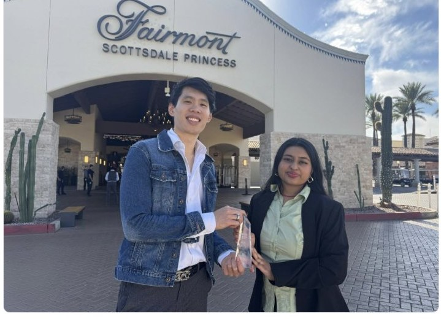
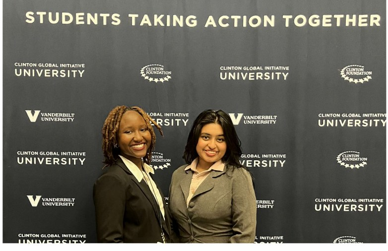
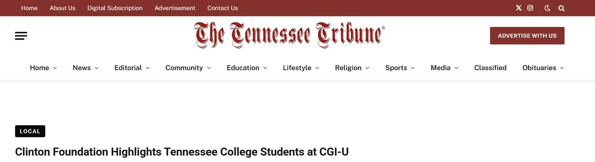
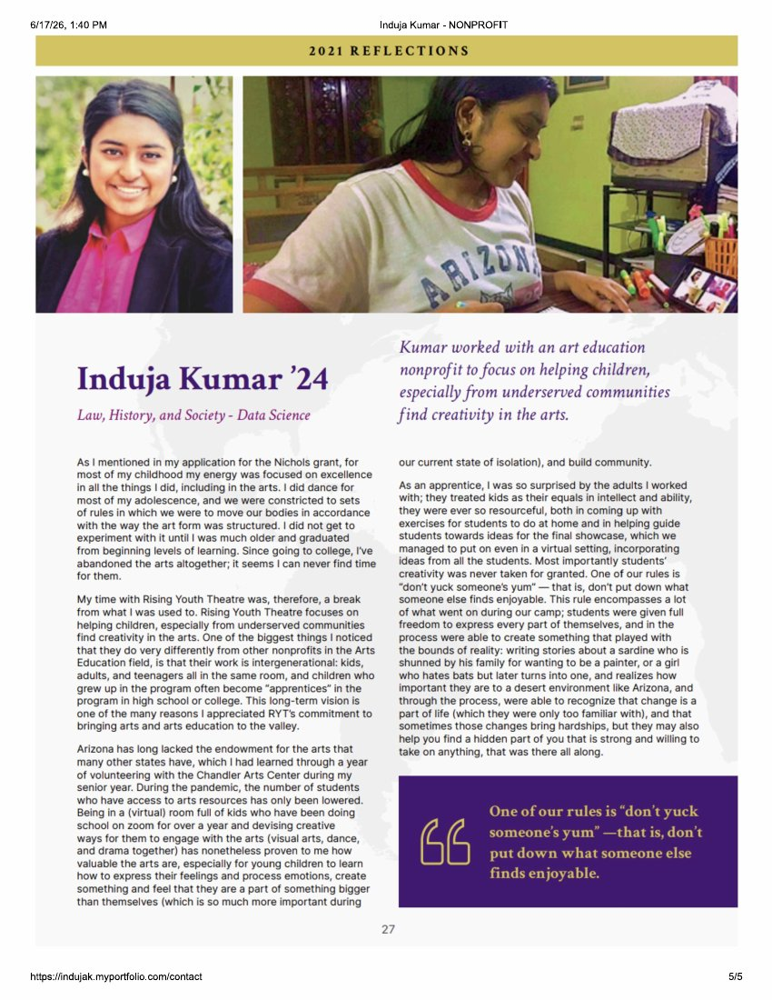

In the nonprofit sector, I promote workforce-development initiatives that enable workers to best reap the benefits of the profits they make possible in the American economy. As part of this work, I have also designed educational programming to bridge gaps in a flawed education system.

As Communications Manager at SEC4CD, I helped manage annual education programming for working-class, rural, Black, Latino, and formerly incarcerated communities across the South, enabling workers to set up cooperatives, create worker-owned businesses, or take a share of the profits they create. For many, this model opened doors to social mobility and fair loans despite barriers like low credit scores, felony convictions, or language barriers.
We also initiated the first publicly owned housing cooperative in Nashville, where renters became resident-owners in a development owned and funded by the city, able to make decisions collectively and build wealth through a radically democratic ownership model.
I was selected as one of ten recent college graduates for the AFL-CIO's Organizing Institute, learning directly from unions and union members the best organizing practices to address the needs of workers amid emerging patterns of work organization in the 21st century.

I was awarded by the Clinton Global Initiative University for my work with the Vanderbilt Education on the Inside Initiative, designing a curriculum to bring STEM education into prison contexts in Nashville, at a time when the city had the highest incarceration rate in the country.

As a Nichols Humanitarian Fund recipient, I served as an intern with Rising Youth Theatre in Phoenix, helping run a summer camp for students mid-pandemic to learn and engage with arts education, access students weren't getting in schools due to Arizona's education funding cuts and the hardships of the pandemic.
My full reflection, click to read ↓
